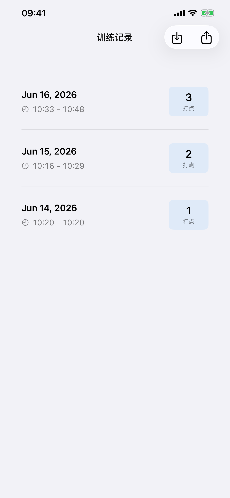
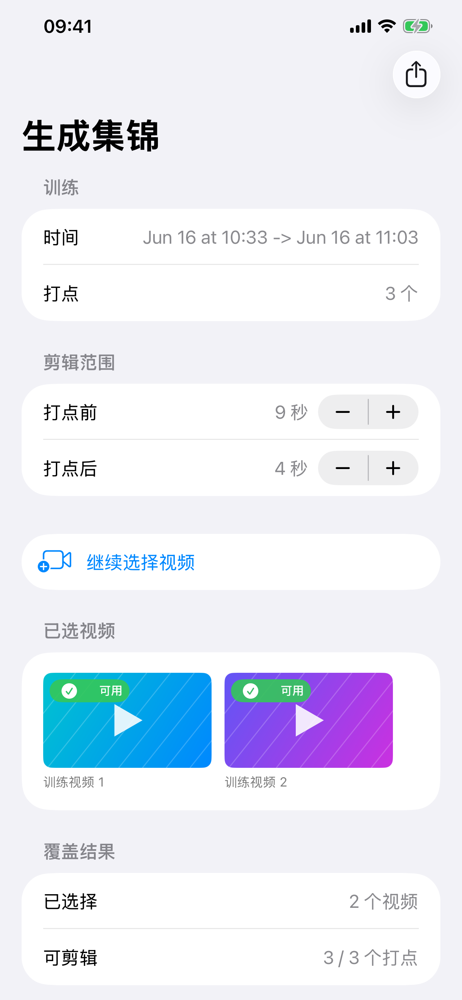
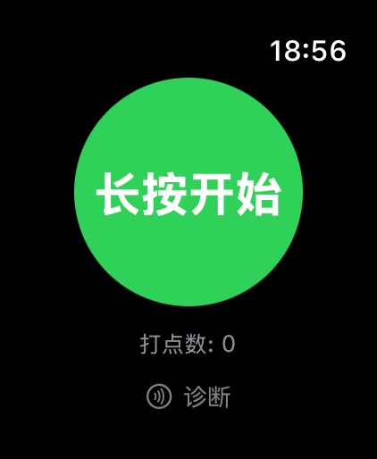
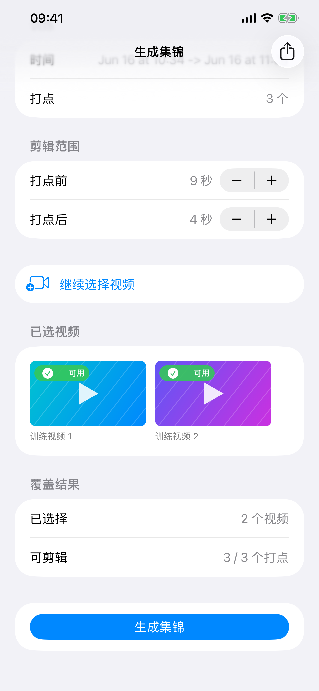

1
用 Apple Watch 给好球打点
长按开始。看到想保留的投篮，双击按钮或转动数码表冠。结束时再长按。
手表上怎么操作
长按开始 / 双击或转动数码表冠打点 / 长按结束。
Apple Watch + iPhone
训练时打点，结束后把投篮视频整理成集锦。



ShotMarker 不需要复杂设置。训练时留下打点，训练后选择视频，剩下交给应用处理。
长按开始。看到想保留的投篮，双击按钮或转动数码表冠。结束时再长按。
训练结束后，记录会同步到 iPhone。找到对应日期和时间，点进这次训练。
选择这次训练拍下的视频。确认可剪辑打点后，点“生成集锦”。
